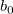

ここで、bはフィットした勾配の値、はフィッティングされた勾配と比較する任意の値、
 フィッティングされた勾配の標準誤差です。これらの値は線形フィットのレポートシートのパラメータ表にあります。
フィッティングされた勾配の標準誤差です。これらの値は線形フィットのレポートシートのパラメータ表にあります。")
自由度
df = the total number of points - 2 が3のとき、両側確率が返されることを意味します。最終更新：2018/08/14
線形フィットはデフォルトで、フィットした勾配が0と大きく異なるかどうかを報告します。しかし、フィットした勾配を、0以外の理論的な勾配値と比較することもできます。 次のように手動で計算できます。
フィッティングされた勾配の標準誤差です。これらの値は線形フィットのレポートシートのパラメータ表にあります。df = the total number of points - 2 が3のとき、両側確率が返されることを意味します。
上記の計算は、スクリプトウィンドウ（ウィンドウ：スクリプトウィンドウ）で実行できます。
返されたProbが0.05より小さい場合、フィッティングした勾配が特定の値と大きく異なることを意味します。
必要なOriginのバージョン: Origin 2019 以降
キーワード：線形曲線フィット、線形回帰、傾き、有意差、比較、P値